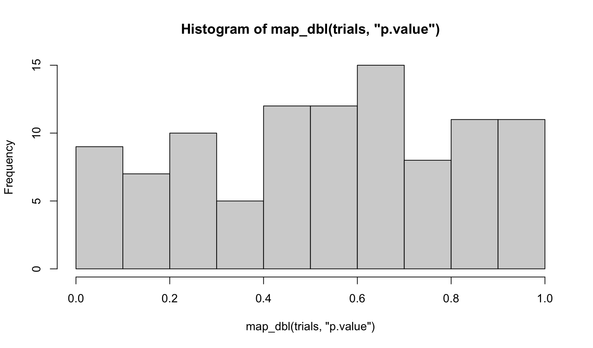
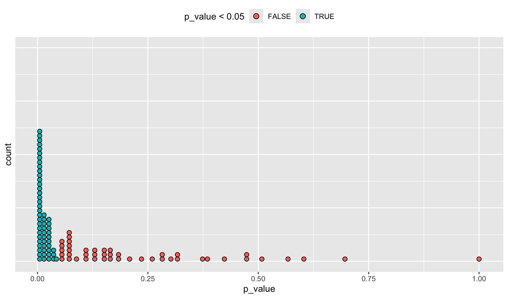
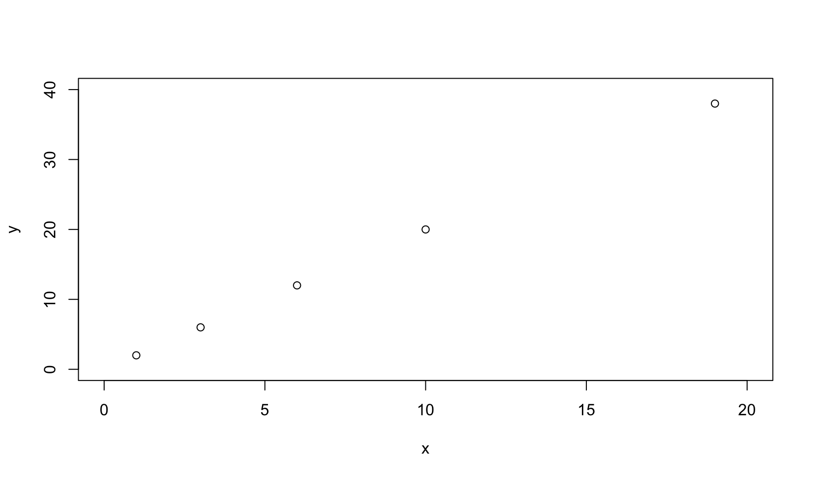
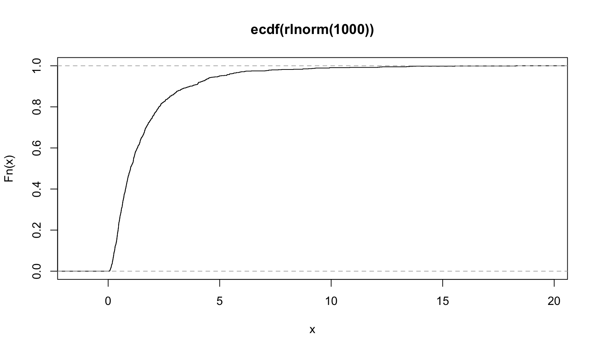
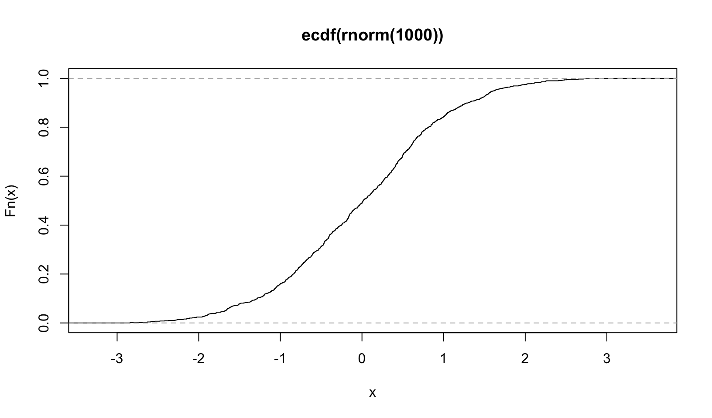
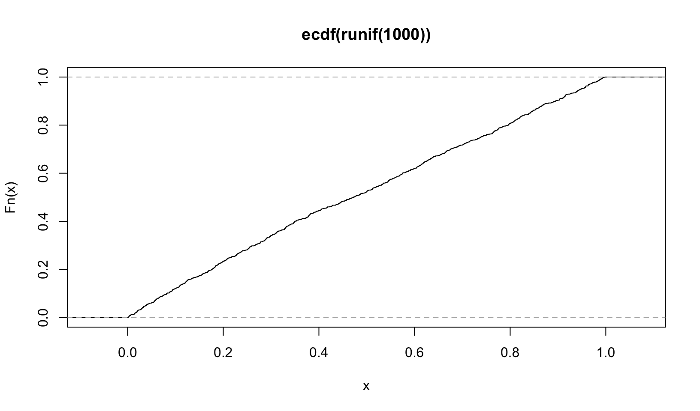
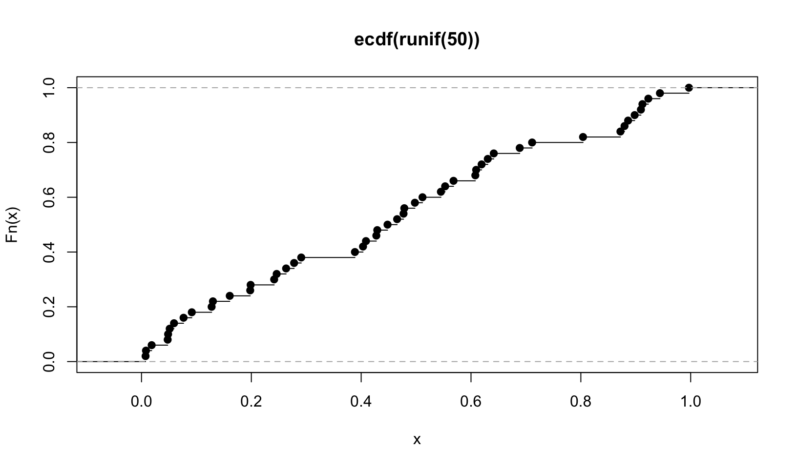
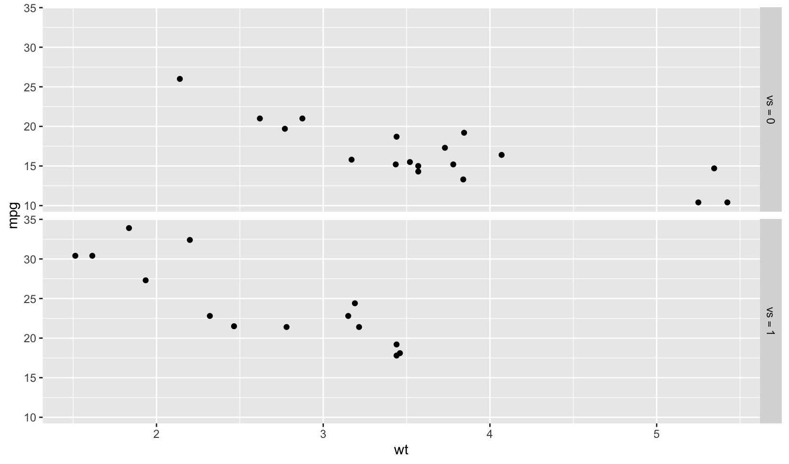
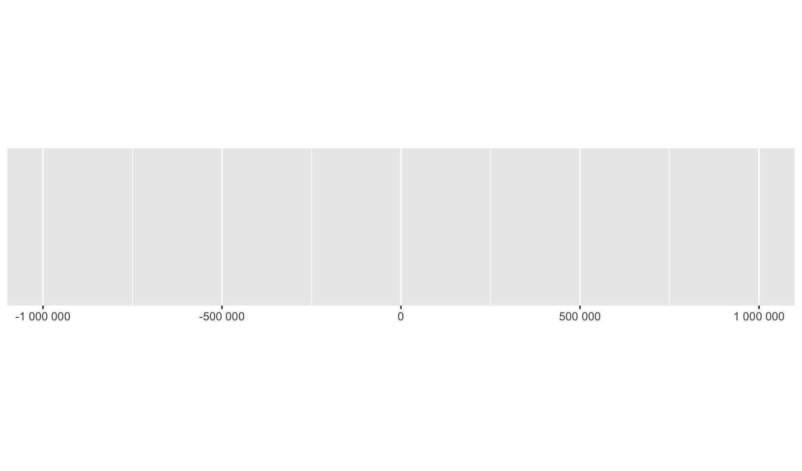

library(purrr)
library(palmerpenguins)
library(ggplot2)
library(scales)
library(rlang)
# from https://github.com/hadley/adv-r/blob/master/common.R
knitr::opts_chunk$set(
comment = "#>",
fig.align = "center"
)
knitr::knit_hooks$set(
small_mar = function(before, options, envir) {
if (before) {
par(mar = c(4.1, 4.1, 0.5, 0.5))
}
}
)Advanced R (Functional programming)
exercises
advanced-r
Workbook for completing quizzes and exercises from the “Functional programming” chapters of Advanced R, second edition, with comparisons to solutions from Advanced R Solutions.
Introduction
This workbook includes answers and solutions to the quizzes and exercises from Advanced R and Advanced R Solutions, organized by chapter. It includes excerpts from both books, copied here.
WARNING, SPOILERS! If you haven’t read Advanced R and intend to complete the quizzes and exercises, don’t read this notebook. It contains my (potentially wrong) answers to both.
9 Functionals
To become significantly more reliable, code must become more transparent. In particular, nested conditions and loops must be viewed with great suspicion. Complicated control flows confuse programmers. Messy code often hides bugs.
— Bjarne Stroustrup
A functional is a function that takes a function as an input and returns a vector as output. Here’s a simple functional: it calls the function provided as input with 1000 random uniform numbers.
randomise <- function(f) f(runif(1e3))
randomise(mean)#> [1] 0.4879462randomise(mean)#> [1] 0.5001018randomise(sum)#> [1] 506.2875The chances are that you’ve already used a functional. You might have used for-loop replacements like base R’s lapply(), apply(), and tapply(); or purrr’s map(); or maybe you’ve used a mathematical functional like integrate() or optim().
A common use of functionals is as an alternative to for loops. For loops have a bad rap in R because many people believe they are slow1, but the real downside of for loops is that they’re very flexible: a loop conveys that you’re iterating, but not what should be done with the results. Just as it’s better to use while than repeat, and it’s better to use for than while (Section 5.3.2), it’s better to use a functional than for. Each functional is tailored for a specific task, so when you recognise the functional you immediately know why it’s being used.
If you’re an experienced for loop user, switching to functionals is typically a pattern matching exercise. You look at the for loop and find a functional that matches the basic form. If one doesn’t exist, don’t try and torture an existing functional to fit the form you need. Instead, just leave it as a for loop! (Or once you’ve repeated the same loop two or more times, maybe think about writing your own functional).
9.2.6 Exercises
- Use
as_mapper()to explore how purrr generates anonymous functions for the integer, character, and list helpers. What helper allows you to extract attributes? Read the documentation to find out.
map_dbl#> function (.x, .f, ..., .progress = FALSE)
#> {
#> map_("double", .x, .f, ..., .progress = .progress)
#> }
#> <bytecode: 0x105b02a90>
#> <environment: namespace:purrr>map_dbl(mtcars, ~ length(unique(.x)))#> mpg cyl disp hp drat wt qsec vs am gear carb
#> 25 3 27 22 22 29 30 2 2 3 6as_mapper(~ length(unique(.x)))#> <lambda>
#> function (..., .x = ..1, .y = ..2, . = ..1)
#> length(unique(.x))
#> attr(,"class")
#> [1] "rlang_lambda_function" "function"function(..., .x = ..1, .y = ..2, . = ..1) length(unique(.x))#> function(..., .x = ..1, .y = ..2, . = ..1) length(unique(.x))as_mapper(mean)#> function (x, ...)
#> UseMethod("mean")
#> <bytecode: 0x130720c38>
#> <environment: namespace:base>as_mapper(function(x) mean(x, na.rm = TRUE))#> function(x) mean(x, na.rm = TRUE)as_mapper(~ mean(.x, na.rm = TRUE))#> <lambda>
#> function (..., .x = ..1, .y = ..2, . = ..1)
#> mean(.x, na.rm = TRUE)
#> attr(,"class")
#> [1] "rlang_lambda_function" "function"Answer: Exploration above. attr_getter() supports extraction of attributes.
AR Solutions: map() offers multiple ways (functions, formulas, and extractor functions) to specify its function argument (.f). Initially, the various inputs have to be transformed into a valid function, which is then applied. The creation of this valid function is the job of as_mapper() and it is called every time map() is used.
Given character, numeric or list input as_mapper() will create an extractor function. Characters select by name, while numeric input selects by positions and a list allows a mix of these two approaches. This extractor interface can be very useful, when working with nested data.
The extractor function is implemented as a call to purrr::pluck(), which accepts a list of accessors (accessors “access” some part of your data object).
as_mapper(c(1, 2)) # equivalent to function(x) x[[1]][[2]]#> function (x, ...)
#> pluck_raw(x, list(1, 2), .default = NULL)
#> <environment: 0x106a95f60>as_mapper(c("a", "b")) # equivalent to function(x) x[["a"]][["b]]#> function (x, ...)
#> pluck_raw(x, list("a", "b"), .default = NULL)
#> <environment: 0x106b18650>as_mapper(list(1, "b")) # equivalent to function(x) x[[1]][["b]]#> function (x, ...)
#> pluck_raw(x, list(1, "b"), .default = NULL)
#> <environment: 0x106b765e0>Besides mixing positions and names, it is also possible to pass along an accessor function. This is basically an anonymous function that gets information about some aspect of the input data. You are free to define your own accessor functions.
If you need to access certain attributes, the helper attr_getter(y) is already predefined and will create the appropriate accessor function for you.
# Define custom accessor function
get_class <- function(x) attr(x, "class")
pluck(mtcars, get_class)#> [1] "data.frame"# Use attr_getter() as a helper
pluck(mtcars, attr_getter("class"))#> [1] "data.frame"Note: AR Solutions provides good additional insight into as_mapper().
map(1:3, ~ runif(2))is a useful pattern for generating random numbers, butmap(1:3, runif(2))is not. Why not? Can you explain why it returns the result that it does?
map(1:3, ~ runif(2))#> [[1]]
#> [1] 0.8150402 0.2038741
#>
#> [[2]]
#> [1] 0.1478543 0.1360639
#>
#> [[3]]
#> [1] 0.6421006 0.3887575map(1:3, runif(2))#> [[1]]
#> [1] 1
#>
#> [[2]]
#> [1] 2
#>
#> [[3]]
#> [1] 3Answer: ~ runif(2) generates a mapper that returns 2 random values from the uniform distribution, where runif(2) creates a pluck() mapper with 2 random values, which will (nearly) always return NULL, as demonstrated by the code below:
as_mapper(~ runif(2))#> <lambda>
#> function (..., .x = ..1, .y = ..2, . = ..1)
#> runif(2)
#> attr(,"class")
#> [1] "rlang_lambda_function" "function"as_mapper(runif(2))#> function (x, ...)
#> pluck_raw(x, list(0.711476220749319, 0.156880941707641), .default = NULL)
#> <environment: 0x11671cf70>A more reasonable use of a pluck mapper for 1:3 is 1:
map(1:3, 1)#> [[1]]
#> [1] 1
#>
#> [[2]]
#> [1] 2
#>
#> [[3]]
#> [1] 3AR Solutions: The first pattern creates multiple random numbers, because ~ runif(2) successfully uses the formula interface. Internally map() applies as_mapper() to this formula, which converts ~ runif(2) into an anonymous function. Afterwards runif(2) is applied three times (one time during each iteration), leading to three different pairs of random numbers.
In the second pattern runif(2) is evaluated once, then the results are passed to map(). Consequently as_mapper() creates an extractor function based on the return values from runif(2) (via pluck()). This leads to three NULLs (pluck()’s .default return), because no values corresponding to the index can be found.
Note: AR Solutions provides additional detail, but is otherwise the same.
Use the appropriate
map()function to:Compute the standard deviation of every column in a numeric data frame.
Compute the standard deviation of every numeric column in a mixed data frame. (Hint: you’ll need to do it in two steps.)
Compute the number of levels for every factor in a data frame.
# a
map_dbl(mtcars, sd)#> mpg cyl disp hp drat wt
#> 6.0269481 1.7859216 123.9386938 68.5628685 0.5346787 0.9784574
#> qsec vs am gear carb
#> 1.7869432 0.5040161 0.4989909 0.7378041 1.6152000# b
map_dbl(iris[map_lgl(iris, is.numeric)], sd)#> Sepal.Length Sepal.Width Petal.Length Petal.Width
#> 0.8280661 0.4358663 1.7652982 0.7622377# c
map_int(warpbreaks, nlevels)#> breaks wool tension
#> 0 2 3# c, excluding non-factor columns
map_int(warpbreaks[map_lgl(warpbreaks, is.factor)], nlevels)#> wool tension
#> 2 3Answer: code above.
AR Solutions: To solve this exercise we take advantage of calling the type stable variants of map(), which give us more concise output, and use map_lgl() to select the columns of the data frame (later you’ll learn about keep(), which simplifies this pattern a little).
map_dbl(mtcars, sd)#> mpg cyl disp hp drat wt
#> 6.0269481 1.7859216 123.9386938 68.5628685 0.5346787 0.9784574
#> qsec vs am gear carb
#> 1.7869432 0.5040161 0.4989909 0.7378041 1.6152000penguins_numeric <- map_lgl(penguins, is.numeric)
map_dbl(penguins[penguins_numeric], sd, na.rm = TRUE)#> bill_length_mm bill_depth_mm flipper_length_mm body_mass_g
#> 5.4595837 1.9747932 14.0617137 801.9545357
#> year
#> 0.8183559penguins_factor <- map_lgl(penguins, is.factor)
map_int(penguins[penguins_factor], ~ length(levels(.x))) # nolint: length_levels_linter.#> species island sex
#> 3 3 2Note: my code is more concise, both with selections and use of nlevels(), although using keep() is preferable.
map_int(keep(warpbreaks, is.factor), nlevels)#> wool tension
#> 2 3- The following code simulates the performance of a t-test for non-normal data. Extract the p-value from each test, then visualise.
trials <- map(1:100, ~ t.test(rpois(10, 10), rpois(7, 10)))
hist(map_dbl(trials, "p.value"), breaks = 10)
Answer: code above.
AR Solutions: There are many ways to visualise this data. However, since there are only 100 data points, we choose a dot plot to visualise the distribution. (Unfortunately, {ggplot2}s geom_dotplot() doesn’t compute proper counts as it was created to visualise distribution densities instead of frequencies, so a histogram would be a suitable alternative).
# Advanced R Solutions uses different code for trials
trials <- map(1:100, ~ t.test(rpois(10, 10), rpois(10, 7)))
library(ggplot2)
df_trials <- tibble::tibble(p_value = map_dbl(trials, "p.value"))
df_trials %>%
ggplot(aes(x = p_value, fill = p_value < 0.05)) +
geom_dotplot(binwidth = 0.01) + # geom_histogram() as alternative
theme(
axis.text.y = element_blank(),
axis.ticks.y = element_blank(),
legend.position = "top"
)#> Warning in vp$just: partial match of 'just' to 'justification'
Notes: the code AR Solutions uses for trials, trials <- map(1:100, ~ t.test(rpois(10, 10), rpois(10, 7))), appears to be correct compared to Advanced R.
- The following code uses a map nested inside another map to apply a function to every element of a nested list. Why does it fail, and what do you need to do to make it work?
x <- list(
list(1, c(3, 9)),
list(c(3, 6), 7, c(4, 7, 6))
)
triple <- function(x) x * 3
try(map(x, map, .f = triple))#> Error in map(x, map, .f = triple) : ℹ In index: 1.
#> Caused by error in `.f()`:
#> ! unused argument (function (.x, .f, ..., .progress = FALSE)
#> {
#> map_("list", .x, .f, ..., .progress = .progress)
#> })Answer: the call fails since the .f = triple specifies the function for the outer map(), and the map is passed as an additional argument to triple(), which generates the error since triple() only takes a single argument. The solution is to pass triple as an additional argument to the outer map():
map(x, map, triple)#> [[1]]
#> [[1]][[1]]
#> [1] 3
#>
#> [[1]][[2]]
#> [1] 9 27
#>
#>
#> [[2]]
#> [[2]][[1]]
#> [1] 9 18
#>
#> [[2]][[2]]
#> [1] 21
#>
#> [[2]][[3]]
#> [1] 12 21 18AR Solutions: This function call fails, because triple() is specified as the .f argument and consequently belongs to the outer map(). The unnamed argument map is treated as an argument of triple(), which causes the error.
There are a number of ways we could resolve the problem. However, there is not much to choose between them for this simple example, although it is good to know your options for more complicated cases.
# Don't name the argument
map(x, map, triple)
# Use magrittr-style anonymous function
map(x, . %>% map(triple))
# Use purrr-style anonymous function
map(x, ~ map(.x, triple))Note: I don’t like the magrittr-style anonymous function option. The others are good.
- Use
map()to fit linear models to themtcarsdataset using the formulas stored in this list:
formulas <- list(
mpg ~ disp,
mpg ~ I(1 / disp),
mpg ~ disp + wt,
mpg ~ I(1 / disp) + wt
)Answer: the following code works, but doesn’t display the text of the formula in the Call:
map(formulas, lm, mtcars)#> [[1]]
#>
#> Call:
#> .f(formula = .x[[i]], data = ..1)
#>
#> Coefficients:
#> (Intercept) disp
#> 29.59985 -0.04122
#>
#>
#> [[2]]
#>
#> Call:
#> .f(formula = .x[[i]], data = ..1)
#>
#> Coefficients:
#> (Intercept) I(1/disp)
#> 10.75 1557.67
#>
#>
#> [[3]]
#>
#> Call:
#> .f(formula = .x[[i]], data = ..1)
#>
#> Coefficients:
#> (Intercept) disp wt
#> 34.96055 -0.01772 -3.35083
#>
#>
#> [[4]]
#>
#> Call:
#> .f(formula = .x[[i]], data = ..1)
#>
#> Coefficients:
#> (Intercept) I(1/disp) wt
#> 19.024 1142.560 -1.798AR Solutions: The data (mtcars) is constant for all these models and so we iterate over the formulas provided. As the formula is the first argument of lm(), we don’t need to specify it explicitly.
models <- map(formulas, lm, data = mtcars)Note: AR Solutions specifies data = mtcars but is otherwise the same.
- Fit the model
mpg ~ dispto each of the bootstrap replicates ofmtcarsin the list below, then extract the \(R^2\) of the model fit (Hint: you can compute the \(R^2\) withsummary().)
bootstrap <- function(df) {
df[sample(nrow(df), replace = TRUE), , drop = FALSE]
}
bootstraps <- map(1:10, ~ bootstrap(mtcars))
map_dbl(bootstraps, ~ summary(lm(mpg ~ disp, .x))$r.squared)#> [1] 0.7561203 0.6365232 0.5776651 0.7538711 0.7804974 0.7385372 0.7243956
#> [8] 0.7948500 0.7130048 0.7728491Answer: code above.
AR Solutions: To accomplish this task, we take advantage of the “list in, list out”-functionality of map(). This allows us to chain multiple transformations together. We start by fitting the models. We then calculate the summaries and extract the \(R^2\) values. For the last call we use map_dbl(), which provides convenient output.
bootstraps %>%
map(~ lm(mpg ~ disp, data = .x)) %>%
map(summary) %>%
map_dbl("r.squared")#> [1] 0.7561203 0.6365232 0.5776651 0.7538711 0.7804974 0.7385372 0.7243956
#> [8] 0.7948500 0.7130048 0.7728491Note: while AR Solutions is arguably slightly more readable, my code should be faster:
bench::mark({
map_dbl(bootstraps, ~ summary(lm(mpg ~ disp, .x))$r.squared)
})#> # A tibble: 1 × 6
#> expression min median `itr/sec` mem_alloc `gc/sec`
#> <bch:expr> <bch:> <bch:> <dbl> <bch:byt> <dbl>
#> 1 { map_dbl(bootstraps, ~summary(lm(… 1.99ms 2.04ms 482. 63.7KB 54.1bench::mark({
bootstraps %>%
map(~ lm(mpg ~ disp, data = .x)) %>%
map(summary) %>%
map_dbl("r.squared")
})#> # A tibble: 1 × 6
#> expression min median `itr/sec` mem_alloc `gc/sec`
#> <bch:expr> <bch:> <bch:> <dbl> <bch:byt> <dbl>
#> 1 { bootstraps %>% map(~lm(mpg ~ dis… 1.98ms 2.04ms 481. 63.7KB 58.6It is actually slightly slower! AR Solutions wins!
9.4.6 Exercises
- Explain the results of
modify(mtcars, 1).
modify(mtcars, 1)#> mpg cyl disp hp drat wt qsec vs am gear carb
#> 1 21 6 160 110 3.9 2.62 16.46 0 1 4 4
#> 2 21 6 160 110 3.9 2.62 16.46 0 1 4 4
#> 3 21 6 160 110 3.9 2.62 16.46 0 1 4 4
#> 4 21 6 160 110 3.9 2.62 16.46 0 1 4 4
#> 5 21 6 160 110 3.9 2.62 16.46 0 1 4 4
#> 6 21 6 160 110 3.9 2.62 16.46 0 1 4 4
#> 7 21 6 160 110 3.9 2.62 16.46 0 1 4 4
#> 8 21 6 160 110 3.9 2.62 16.46 0 1 4 4
#> 9 21 6 160 110 3.9 2.62 16.46 0 1 4 4
#> 10 21 6 160 110 3.9 2.62 16.46 0 1 4 4
#> 11 21 6 160 110 3.9 2.62 16.46 0 1 4 4
#> 12 21 6 160 110 3.9 2.62 16.46 0 1 4 4
#> 13 21 6 160 110 3.9 2.62 16.46 0 1 4 4
#> 14 21 6 160 110 3.9 2.62 16.46 0 1 4 4
#> 15 21 6 160 110 3.9 2.62 16.46 0 1 4 4
#> 16 21 6 160 110 3.9 2.62 16.46 0 1 4 4
#> 17 21 6 160 110 3.9 2.62 16.46 0 1 4 4
#> 18 21 6 160 110 3.9 2.62 16.46 0 1 4 4
#> 19 21 6 160 110 3.9 2.62 16.46 0 1 4 4
#> 20 21 6 160 110 3.9 2.62 16.46 0 1 4 4
#> 21 21 6 160 110 3.9 2.62 16.46 0 1 4 4
#> 22 21 6 160 110 3.9 2.62 16.46 0 1 4 4
#> 23 21 6 160 110 3.9 2.62 16.46 0 1 4 4
#> 24 21 6 160 110 3.9 2.62 16.46 0 1 4 4
#> 25 21 6 160 110 3.9 2.62 16.46 0 1 4 4
#> 26 21 6 160 110 3.9 2.62 16.46 0 1 4 4
#> 27 21 6 160 110 3.9 2.62 16.46 0 1 4 4
#> 28 21 6 160 110 3.9 2.62 16.46 0 1 4 4
#> 29 21 6 160 110 3.9 2.62 16.46 0 1 4 4
#> 30 21 6 160 110 3.9 2.62 16.46 0 1 4 4
#> 31 21 6 160 110 3.9 2.62 16.46 0 1 4 4
#> 32 21 6 160 110 3.9 2.62 16.46 0 1 4 4as_mapper(1)#> function (x, ...)
#> pluck_raw(x, list(1), .default = NULL)
#> <environment: 0x1166fd478>head(mtcars, 1)#> mpg cyl disp hp drat wt qsec vs am gear carb
#> Mazda RX4 21 6 160 110 3.9 2.62 16.46 0 1 4 4Answer: modify(mtcars, 1) creates a mapper that plucks the first element of each column of mtcars and writes that value to every row.
AR Solutions: modify() is based on map(), and in this case, the extractor interface will be used. It extracts the first element of each column in mtcars. modify() always returns the same structure as its input: in this case it forces the first row to be recycled 32 times. (Internally modify() uses .x[] <- map(.x, .f, ...) for assignment.)
Notes: this code makes the recycling clear:
unlist(map(mtcars, 1))#> mpg cyl disp hp drat wt qsec vs am gear carb
#> 21.00 6.00 160.00 110.00 3.90 2.62 16.46 0.00 1.00 4.00 4.00- Rewrite the following code to use
iwalk()instead ofwalk2(). What are the advantages and disadvantages?
cyls <- split(mtcars, mtcars$cyl)
paths <- file.path(temp, paste0("cyl-", names(cyls), ".csv"))
walk2(cyls, paths, write.csv)Answer: code below.
temp <- tempfile()
dir.create(temp)
cyls <- split(mtcars, mtcars$cyl)
iwalk(cyls, ~ write.csv(.x, file.path(temp, paste0("cyl-", .y, ".csv"))))
dir(temp)#> [1] "cyl-4.csv" "cyl-6.csv" "cyl-8.csv"The main advantage of using iwalk() is that it will use seq_along() if x does not have names. In this case, x has names, and the resulting code is a bit harder to understand, and requires a formula (or function).
AR Solutions: iwalk() allows us to use a single variable, storing the output path in the names.
temp <- tempfile()
dir.create(temp)
cyls <- split(mtcars, mtcars$cyl)
names(cyls) <- file.path(temp, paste0("cyl-", names(cyls), ".csv"))
iwalk(cyls, ~ write.csv(.x, .y))We could do this in a single pipe by taking advantage of set_names():
mtcars %>%
split(mtcars$cyl) %>%
set_names(~ file.path(temp, paste0("cyl-", .x, ".csv"))) %>%
iwalk(~ write.csv(.x, .y))Notes: the AR Solutions use of names and the pipe is clever.
- Explain how the following code transforms a data frame using functions stored in a list.
if (exists("mtcars")) rm(mtcars)#> Warning in rm(mtcars): object 'mtcars' not foundmtcars#> mpg cyl disp hp drat wt qsec vs am gear carb
#> Mazda RX4 21.0 6 160.0 110 3.90 2.620 16.46 0 1 4 4
#> Mazda RX4 Wag 21.0 6 160.0 110 3.90 2.875 17.02 0 1 4 4
#> Datsun 710 22.8 4 108.0 93 3.85 2.320 18.61 1 1 4 1
#> Hornet 4 Drive 21.4 6 258.0 110 3.08 3.215 19.44 1 0 3 1
#> Hornet Sportabout 18.7 8 360.0 175 3.15 3.440 17.02 0 0 3 2
#> Valiant 18.1 6 225.0 105 2.76 3.460 20.22 1 0 3 1
#> Duster 360 14.3 8 360.0 245 3.21 3.570 15.84 0 0 3 4
#> Merc 240D 24.4 4 146.7 62 3.69 3.190 20.00 1 0 4 2
#> Merc 230 22.8 4 140.8 95 3.92 3.150 22.90 1 0 4 2
#> Merc 280 19.2 6 167.6 123 3.92 3.440 18.30 1 0 4 4
#> Merc 280C 17.8 6 167.6 123 3.92 3.440 18.90 1 0 4 4
#> Merc 450SE 16.4 8 275.8 180 3.07 4.070 17.40 0 0 3 3
#> Merc 450SL 17.3 8 275.8 180 3.07 3.730 17.60 0 0 3 3
#> Merc 450SLC 15.2 8 275.8 180 3.07 3.780 18.00 0 0 3 3
#> Cadillac Fleetwood 10.4 8 472.0 205 2.93 5.250 17.98 0 0 3 4
#> Lincoln Continental 10.4 8 460.0 215 3.00 5.424 17.82 0 0 3 4
#> Chrysler Imperial 14.7 8 440.0 230 3.23 5.345 17.42 0 0 3 4
#> Fiat 128 32.4 4 78.7 66 4.08 2.200 19.47 1 1 4 1
#> Honda Civic 30.4 4 75.7 52 4.93 1.615 18.52 1 1 4 2
#> Toyota Corolla 33.9 4 71.1 65 4.22 1.835 19.90 1 1 4 1
#> Toyota Corona 21.5 4 120.1 97 3.70 2.465 20.01 1 0 3 1
#> Dodge Challenger 15.5 8 318.0 150 2.76 3.520 16.87 0 0 3 2
#> AMC Javelin 15.2 8 304.0 150 3.15 3.435 17.30 0 0 3 2
#> Camaro Z28 13.3 8 350.0 245 3.73 3.840 15.41 0 0 3 4
#> Pontiac Firebird 19.2 8 400.0 175 3.08 3.845 17.05 0 0 3 2
#> Fiat X1-9 27.3 4 79.0 66 4.08 1.935 18.90 1 1 4 1
#> Porsche 914-2 26.0 4 120.3 91 4.43 2.140 16.70 0 1 5 2
#> Lotus Europa 30.4 4 95.1 113 3.77 1.513 16.90 1 1 5 2
#> Ford Pantera L 15.8 8 351.0 264 4.22 3.170 14.50 0 1 5 4
#> Ferrari Dino 19.7 6 145.0 175 3.62 2.770 15.50 0 1 5 6
#> Maserati Bora 15.0 8 301.0 335 3.54 3.570 14.60 0 1 5 8
#> Volvo 142E 21.4 4 121.0 109 4.11 2.780 18.60 1 1 4 2trans <- list(
disp = function(x) x * 0.0163871,
am = function(x) factor(x, labels = c("auto", "manual"))
)
nm <- names(trans)
mtcars[nm] <- map2(trans, mtcars[nm], function(f, var) f(var))
mtcars#> mpg cyl disp hp drat wt qsec vs am gear carb
#> Mazda RX4 21.0 6 2.621936 110 3.90 2.620 16.46 0 manual 4 4
#> Mazda RX4 Wag 21.0 6 2.621936 110 3.90 2.875 17.02 0 manual 4 4
#> Datsun 710 22.8 4 1.769807 93 3.85 2.320 18.61 1 manual 4 1
#> Hornet 4 Drive 21.4 6 4.227872 110 3.08 3.215 19.44 1 auto 3 1
#> Hornet Sportabout 18.7 8 5.899356 175 3.15 3.440 17.02 0 auto 3 2
#> Valiant 18.1 6 3.687098 105 2.76 3.460 20.22 1 auto 3 1
#> Duster 360 14.3 8 5.899356 245 3.21 3.570 15.84 0 auto 3 4
#> Merc 240D 24.4 4 2.403988 62 3.69 3.190 20.00 1 auto 4 2
#> Merc 230 22.8 4 2.307304 95 3.92 3.150 22.90 1 auto 4 2
#> Merc 280 19.2 6 2.746478 123 3.92 3.440 18.30 1 auto 4 4
#> Merc 280C 17.8 6 2.746478 123 3.92 3.440 18.90 1 auto 4 4
#> Merc 450SE 16.4 8 4.519562 180 3.07 4.070 17.40 0 auto 3 3
#> Merc 450SL 17.3 8 4.519562 180 3.07 3.730 17.60 0 auto 3 3
#> Merc 450SLC 15.2 8 4.519562 180 3.07 3.780 18.00 0 auto 3 3
#> Cadillac Fleetwood 10.4 8 7.734711 205 2.93 5.250 17.98 0 auto 3 4
#> Lincoln Continental 10.4 8 7.538066 215 3.00 5.424 17.82 0 auto 3 4
#> Chrysler Imperial 14.7 8 7.210324 230 3.23 5.345 17.42 0 auto 3 4
#> Fiat 128 32.4 4 1.289665 66 4.08 2.200 19.47 1 manual 4 1
#> Honda Civic 30.4 4 1.240503 52 4.93 1.615 18.52 1 manual 4 2
#> Toyota Corolla 33.9 4 1.165123 65 4.22 1.835 19.90 1 manual 4 1
#> Toyota Corona 21.5 4 1.968091 97 3.70 2.465 20.01 1 auto 3 1
#> Dodge Challenger 15.5 8 5.211098 150 2.76 3.520 16.87 0 auto 3 2
#> AMC Javelin 15.2 8 4.981678 150 3.15 3.435 17.30 0 auto 3 2
#> Camaro Z28 13.3 8 5.735485 245 3.73 3.840 15.41 0 auto 3 4
#> Pontiac Firebird 19.2 8 6.554840 175 3.08 3.845 17.05 0 auto 3 2
#> Fiat X1-9 27.3 4 1.294581 66 4.08 1.935 18.90 1 manual 4 1
#> Porsche 914-2 26.0 4 1.971368 91 4.43 2.140 16.70 0 manual 5 2
#> Lotus Europa 30.4 4 1.558413 113 3.77 1.513 16.90 1 manual 5 2
#> Ford Pantera L 15.8 8 5.751872 264 4.22 3.170 14.50 0 manual 5 4
#> Ferrari Dino 19.7 6 2.376130 175 3.62 2.770 15.50 0 manual 5 6
#> Maserati Bora 15.0 8 4.932517 335 3.54 3.570 14.60 0 manual 5 8
#> Volvo 142E 21.4 4 1.982839 109 4.11 2.780 18.60 1 manual 4 2rm(mtcars)Compare and contrast the map2() approach to this map() approach:
mtcars[nm] <- map(nm, ~ trans[[.x]](mtcars[[.x]]))Answer: the map2() code applies the anonymous functions to the corresponding column in mtcars based on their name in the list:
mtcars[nm]is equivalent tomtcars[c("disp", "am")], so the code is modifying those two columns- the mapping function,
function(f, var) f(var)is run asf(mtcars[["disp"]])andf(mtcars[["am"]]), with the corresponding function intransasf, sincetransandmtcars[nm]are passed as parameters to the function
The equivalent map() approach isn’t as clean: it’s harder to understand what map() is doing.
AR Solutions: In the first approach
mtcars[nm] <- map2(trans, mtcars[nm], function(f, var) f(var))the list of the 2 functions (trans) and the 2 appropriately selected data frame columns (mtcars[nm]) are supplied to map2(). map2() creates an anonymous function (f(var)) which applies the functions to the variables when map2() iterates over their (similar) indices. On the left-hand side, the respective 2 elements of mtcars are being replaced by their new transformations.
The map() variant
mtcars[nm] <- map(nm, ~ trans[[.x]](mtcars[[.x]]))does basically the same. However, it directly iterates over the names (nm) of the transformations. Therefore, the data frame columns are selected during the iteration.
Besides the iteration pattern, the approaches differ in the possibilities for appropriate argument naming in the .f argument. In the map2() approach we iterate over the elements of x and y. Therefore, it is possible to choose appropriate placeholders like f and var. This makes the anonymous function more expressive at the cost of making it longer. We think using the formula interface in this way is preferable compared to the rather cryptic mtcars[nm] <- map2(trans, mtcars[nm], ~ .x(.y)).
In the map() approach we map over the variable names. It is therefore not possible to introduce placeholders for the function and variable names. The formula syntax together with the .x pronoun is pretty compact. The object names and the brackets clearly indicate the application of transformations to specific columns of mtcars. In this case the iteration over the variable names comes in handy, as it highlights the importance of matching between trans and mtcars element names. Together with the replacement form on the left-hand side, this line is relatively easy to inspect.
To summarise, in situations where map() and map2() provide solutions for an iteration problem, several points may be considered before deciding for one or the other approach.
- What does
write.csv()return, i.e. what happens if you use it withmap2()instead ofwalk2()?
paths <- file.path(temp, paste0("cyl-", names(cyls), ".csv"))
map2(cyls, paths, write.csv)#> $`4`
#> NULL
#>
#> $`6`
#> NULL
#>
#> $`8`
#> NULLAnswer: write.csv() is designed to return NULL, invisibly. While walk2() hides the NULL return values, map2() does not.
AR Solutions: write.csv() returns NULL. As we call the function for its side effect (creating a CSV file), walk2() would be appropriate here. Otherwise, we receive a rather uninformative list of NULLs.
9.6.3 Exercises
- Why isn’t
is.na()a predicate function? What base R function is closest to being a predicate version ofis.na()?
Answer: is.na(x) returns logical(0) when x is NULL, which violates the rule that predicate functions only return TRUE or FALSE. anyNA(x, recursive = FALSE) appears to be a predicate version of is.na().
AR Solutions: is.na() is not a predicate function, because it returns a logical vector the same length as the input, not a single TRUE or FALSE.
anyNA() is the closest equivalent because it always returns a single TRUE or FALSE if there are any missing values present. You could also imagine an allNA() which would return TRUE if all values were missing, but that’s considerably less useful so base R does not provide it.
simple_reduce()has a problem whenxis length 0 or length 1. Describe the source of the problem and how you might go about fixing it.
simple_reduce <- function(x, f) {
out <- x[[1]]
for (i in seq(2, length(x))) {
out <- f(out, x[[i]])
}
out
}Answer: using seq() results in a backwards count when x is length 0 or 1.
seq(2, 0)#> [1] 2 1 0seq(2, 1)#> [1] 2 1The fix is to check the length of x and return itself when length is 0 and throw an error when length is 1, as reduce() does.
AR Solutions: The loop inside simple_reduce() always starts with the index 2, and seq() can count both up and down:
Therefore, subsetting length-0 and length-1 vectors via [[ will lead to a subscript out of bounds error. To avoid this, we allow simple_reduce() to return before the for loop is started and include a default argument for 0-length vectors.
simple_reduce <- function(x, f, default) {
if (length(x) == 0L) {
return(default)
}
if (length(x) == 1L) {
return(x[[1L]])
}
out <- x[[1]]
for (i in seq(2, length(x))) {
out <- f(out, x[[i]])
}
out
}Our new simple_reduce() now works as intended:
try(simple_reduce(integer(0), `+`))#> Error in simple_reduce(integer(0), `+`) :
#> argument "default" is missing, with no defaultsimple_reduce(integer(0), `+`, default = 0L)#> [1] 0simple_reduce(1, `+`)#> [1] 1simple_reduce(1:3, `+`)#> [1] 6- Implement the
span()function from Haskell: given a listxand a predicate functionf,span(x, f)returns the location of the longest sequential run of elements where the predicate is true. (Hint: you might findrle()helpful.)
test <- c(as.list(letters[1:21]), as.list(1:20), as.list(letters[22:26]), as.list(20:39))
test2 <- c(as.list(letters[1:21]), as.list(1:20), as.list(letters[22:26]), as.list(20:40))
span <- function(x, f) {
runs <- rle(map_lgl(x, f))
max_true <- max_index <- 0
index <- 1
for (i in seq_along(runs$values)) {
if (runs$values[i] && runs$lengths[i] > max_true) {
max_true <- runs$lengths[i]
max_index <- index
}
index <- index + runs$lengths[i]
}
max_index
}
span(test, is.numeric)#> [1] 22span(test2, is.numeric)#> [1] 47span(1, is.numeric)#> [1] 1span("a", is.numeric)#> [1] 0span(list("a", 1:10, 1:20), is.numeric)#> [1] 2Answer: code above.
AR Solutions: Our span_r() function returns the indices of the (first occurring) longest sequential run of elements where the predicate is true. If the predicate is never true, the longest run has length 0, in which case we return integer(0).
span_r <- function(x, f) {
idx <- unname(map_lgl(x, ~ f(.x)))
rle <- rle(idx)
# Check if the predicate is never true
if (!any(rle$values)) {
return(integer(0))
}
# Find the length of the longest sequence of true values
longest <- max(rle$lengths[rle$values])
# Find the position of the (first) longest run in rle
longest_idx <- which(rle$values & rle$lengths == longest)[1]
# Add up all lengths in rle before the longest run
ind_before_longest <- sum(rle$lengths[seq_len(longest_idx - 1)])
out_start <- ind_before_longest + 1L
out_end <- ind_before_longest + longest
out_start:out_end
}
# Check that it works
span_r(c(0, 0, 0, 0, 0), is.na)#> integer(0)span_r(c(NA, 0, 0, 0, 0), is.na)#> [1] 1span_r(c(NA, 0, NA, NA, NA), is.na)#> [1] 3 4 5Notes: AR Solutions shows how to find the index of the longest sequence using which(), which is new to me, and returns more information by returning indexes of the entire span. The AR Solutions approach is also significantly faster (which I did not expect).
bench::mark(span_r(test2, is.numeric))#> # A tibble: 1 × 6
#> expression min median `itr/sec` mem_alloc `gc/sec`
#> <bch:expr> <bch:tm> <bch:tm> <dbl> <bch:byt> <dbl>
#> 1 span_r(test2, is.numeric) 50.4µs 53.1µs 18041. 4.01KB 65.1bench::mark(span(test2, is.numeric))#> # A tibble: 1 × 6
#> expression min median `itr/sec` mem_alloc `gc/sec`
#> <bch:expr> <bch:tm> <bch:tm> <dbl> <bch:byt> <dbl>
#> 1 span(test2, is.numeric) 68.6µs 71.2µs 13851. 4.01KB 20.8- Implement
arg_max(). It should take a function and a vector of inputs, and return the elements of the input where the function returns the highest value. For example,arg_max(-10:5, function(x) x ^ 2)should return -10.arg_max(-5:5, function(x) x ^ 2)should returnc(-5, 5). Also implement the matchingarg_min()function.
Answer: code below.
arg_max <- function(x, f) {
val <- map_dbl(x, f)
val_max <- max(val)
x[which(val == val_max)]
}
arg_max(-10:5, function(x) x^2)#> [1] -10arg_max(-5:5, function(x) x^2)#> [1] -5 5arg_min <- function(x, f) {
val <- map_dbl(x, f)
val_min <- min(val)
x[which(val == val_min)]
}
arg_min(-10:5, function(x) x^2)#> [1] 0arg_min(c(-5:-1, 1:5), function(x) x^2)#> [1] -1 1AR Solutions: Both functions take a vector of inputs and a function as an argument. The function output is then used to subset the input accordingly.
arg_max <- function(x, f) {
y <- map_dbl(x, f)
x[y == max(y)]
}
arg_min <- function(x, f) {
y <- map_dbl(x, f)
x[y == min(y)]
}
arg_max(-10:5, function(x) x^2)#> [1] -10arg_min(-10:5, function(x) x^2)#> [1] 0Notes: using which() is unnecessary, AR Solutions is a better approach.
- The function below scales a vector so it falls in the range [0, 1]. How would you apply it to every column of a data frame? How would you apply it to every numeric column in a data frame?
scale01 <- function(x) {
rng <- range(x, na.rm = TRUE)
(x - rng[1]) / (rng[2] - rng[1])
}Answer: code below.
# every column
modify(mtcars, scale01)#> mpg cyl disp hp drat wt qsec vs am
#> 1 0.4510638 0.5 0.22175106 0.20494700 0.52534562 0.28304781 0.23333333 0 1
#> 2 0.4510638 0.5 0.22175106 0.20494700 0.52534562 0.34824853 0.30000000 0 1
#> 3 0.5276596 0.0 0.09204290 0.14487633 0.50230415 0.20634109 0.48928571 1 1
#> 4 0.4680851 0.5 0.46620105 0.20494700 0.14746544 0.43518282 0.58809524 1 0
#> 5 0.3531915 1.0 0.72062859 0.43462898 0.17972350 0.49271286 0.30000000 0 0
#> 6 0.3276596 0.5 0.38388626 0.18727915 0.00000000 0.49782664 0.68095238 1 0
#> 7 0.1659574 1.0 0.72062859 0.68197880 0.20737327 0.52595244 0.15952381 0 0
#> 8 0.5957447 0.0 0.18857570 0.03533569 0.42857143 0.42879059 0.65476190 1 0
#> 9 0.5276596 0.0 0.17385882 0.15194346 0.53456221 0.41856303 1.00000000 1 0
#> 10 0.3744681 0.5 0.24070841 0.25088339 0.53456221 0.49271286 0.45238095 1 0
#> 11 0.3148936 0.5 0.24070841 0.25088339 0.53456221 0.49271286 0.52380952 1 0
#> 12 0.2553191 1.0 0.51060115 0.45229682 0.14285714 0.65379698 0.34523810 0 0
#> 13 0.2936170 1.0 0.51060115 0.45229682 0.14285714 0.56686269 0.36904762 0 0
#> 14 0.2042553 1.0 0.51060115 0.45229682 0.14285714 0.57964715 0.41666667 0 0
#> 15 0.0000000 1.0 1.00000000 0.54063604 0.07834101 0.95551010 0.41428571 0 0
#> 16 0.0000000 1.0 0.97006735 0.57597173 0.11059908 1.00000000 0.39523810 0 0
#> 17 0.1829787 1.0 0.92017960 0.62897527 0.21658986 0.97980056 0.34761905 0 0
#> 18 0.9361702 0.0 0.01895735 0.04946996 0.60829493 0.17565840 0.59166667 1 1
#> 19 0.8510638 0.0 0.01147418 0.00000000 1.00000000 0.02608029 0.47857143 1 1
#> 20 1.0000000 0.0 0.00000000 0.04593640 0.67281106 0.08233188 0.64285714 1 1
#> 21 0.4723404 0.0 0.12222499 0.15901060 0.43317972 0.24341601 0.65595238 1 0
#> 22 0.2170213 1.0 0.61586431 0.34628975 0.00000000 0.51316799 0.28214286 0 0
#> 23 0.2042553 1.0 0.58094288 0.34628975 0.17972350 0.49143442 0.33333333 0 0
#> 24 0.1234043 1.0 0.69568471 0.68197880 0.44700461 0.59498849 0.10833333 0 0
#> 25 0.3744681 1.0 0.82040409 0.43462898 0.14746544 0.59626694 0.30357143 0 0
#> 26 0.7191489 0.0 0.01970566 0.04946996 0.60829493 0.10790079 0.52380952 1 1
#> 27 0.6638298 0.0 0.12272387 0.13780919 0.76958525 0.16031705 0.26190476 0 1
#> 28 0.8510638 0.0 0.05986530 0.21554770 0.46543779 0.00000000 0.28571429 1 1
#> 29 0.2297872 1.0 0.69817910 0.74911661 0.67281106 0.42367681 0.00000000 0 1
#> 30 0.3957447 0.5 0.18433525 0.43462898 0.39631336 0.32140118 0.11904762 0 1
#> 31 0.1957447 1.0 0.57345972 1.00000000 0.35944700 0.52595244 0.01190476 0 1
#> 32 0.4680851 0.0 0.12446994 0.20141343 0.62211982 0.32395807 0.48809524 1 1
#> gear carb
#> 1 0.5 0.4285714
#> 2 0.5 0.4285714
#> 3 0.5 0.0000000
#> 4 0.0 0.0000000
#> 5 0.0 0.1428571
#> 6 0.0 0.0000000
#> 7 0.0 0.4285714
#> 8 0.5 0.1428571
#> 9 0.5 0.1428571
#> 10 0.5 0.4285714
#> 11 0.5 0.4285714
#> 12 0.0 0.2857143
#> 13 0.0 0.2857143
#> 14 0.0 0.2857143
#> 15 0.0 0.4285714
#> 16 0.0 0.4285714
#> 17 0.0 0.4285714
#> 18 0.5 0.0000000
#> 19 0.5 0.1428571
#> 20 0.5 0.0000000
#> 21 0.0 0.0000000
#> 22 0.0 0.1428571
#> 23 0.0 0.1428571
#> 24 0.0 0.4285714
#> 25 0.0 0.1428571
#> 26 0.5 0.0000000
#> 27 1.0 0.1428571
#> 28 1.0 0.1428571
#> 29 1.0 0.4285714
#> 30 1.0 0.7142857
#> 31 1.0 1.0000000
#> 32 0.5 0.1428571# every numeric column
modify_if(iris, is.numeric, scale01)#> Sepal.Length Sepal.Width Petal.Length Petal.Width Species
#> 1 0.22222222 0.62500000 0.06779661 0.04166667 setosa
#> 2 0.16666667 0.41666667 0.06779661 0.04166667 setosa
#> 3 0.11111111 0.50000000 0.05084746 0.04166667 setosa
#> 4 0.08333333 0.45833333 0.08474576 0.04166667 setosa
#> 5 0.19444444 0.66666667 0.06779661 0.04166667 setosa
#> 6 0.30555556 0.79166667 0.11864407 0.12500000 setosa
#> 7 0.08333333 0.58333333 0.06779661 0.08333333 setosa
#> 8 0.19444444 0.58333333 0.08474576 0.04166667 setosa
#> 9 0.02777778 0.37500000 0.06779661 0.04166667 setosa
#> 10 0.16666667 0.45833333 0.08474576 0.00000000 setosa
#> 11 0.30555556 0.70833333 0.08474576 0.04166667 setosa
#> 12 0.13888889 0.58333333 0.10169492 0.04166667 setosa
#> 13 0.13888889 0.41666667 0.06779661 0.00000000 setosa
#> 14 0.00000000 0.41666667 0.01694915 0.00000000 setosa
#> 15 0.41666667 0.83333333 0.03389831 0.04166667 setosa
#> 16 0.38888889 1.00000000 0.08474576 0.12500000 setosa
#> 17 0.30555556 0.79166667 0.05084746 0.12500000 setosa
#> 18 0.22222222 0.62500000 0.06779661 0.08333333 setosa
#> 19 0.38888889 0.75000000 0.11864407 0.08333333 setosa
#> 20 0.22222222 0.75000000 0.08474576 0.08333333 setosa
#> 21 0.30555556 0.58333333 0.11864407 0.04166667 setosa
#> 22 0.22222222 0.70833333 0.08474576 0.12500000 setosa
#> 23 0.08333333 0.66666667 0.00000000 0.04166667 setosa
#> 24 0.22222222 0.54166667 0.11864407 0.16666667 setosa
#> 25 0.13888889 0.58333333 0.15254237 0.04166667 setosa
#> 26 0.19444444 0.41666667 0.10169492 0.04166667 setosa
#> 27 0.19444444 0.58333333 0.10169492 0.12500000 setosa
#> 28 0.25000000 0.62500000 0.08474576 0.04166667 setosa
#> 29 0.25000000 0.58333333 0.06779661 0.04166667 setosa
#> 30 0.11111111 0.50000000 0.10169492 0.04166667 setosa
#> 31 0.13888889 0.45833333 0.10169492 0.04166667 setosa
#> 32 0.30555556 0.58333333 0.08474576 0.12500000 setosa
#> 33 0.25000000 0.87500000 0.08474576 0.00000000 setosa
#> 34 0.33333333 0.91666667 0.06779661 0.04166667 setosa
#> 35 0.16666667 0.45833333 0.08474576 0.04166667 setosa
#> 36 0.19444444 0.50000000 0.03389831 0.04166667 setosa
#> 37 0.33333333 0.62500000 0.05084746 0.04166667 setosa
#> 38 0.16666667 0.66666667 0.06779661 0.00000000 setosa
#> 39 0.02777778 0.41666667 0.05084746 0.04166667 setosa
#> 40 0.22222222 0.58333333 0.08474576 0.04166667 setosa
#> 41 0.19444444 0.62500000 0.05084746 0.08333333 setosa
#> 42 0.05555556 0.12500000 0.05084746 0.08333333 setosa
#> 43 0.02777778 0.50000000 0.05084746 0.04166667 setosa
#> 44 0.19444444 0.62500000 0.10169492 0.20833333 setosa
#> 45 0.22222222 0.75000000 0.15254237 0.12500000 setosa
#> 46 0.13888889 0.41666667 0.06779661 0.08333333 setosa
#> 47 0.22222222 0.75000000 0.10169492 0.04166667 setosa
#> 48 0.08333333 0.50000000 0.06779661 0.04166667 setosa
#> 49 0.27777778 0.70833333 0.08474576 0.04166667 setosa
#> 50 0.19444444 0.54166667 0.06779661 0.04166667 setosa
#> 51 0.75000000 0.50000000 0.62711864 0.54166667 versicolor
#> 52 0.58333333 0.50000000 0.59322034 0.58333333 versicolor
#> 53 0.72222222 0.45833333 0.66101695 0.58333333 versicolor
#> 54 0.33333333 0.12500000 0.50847458 0.50000000 versicolor
#> 55 0.61111111 0.33333333 0.61016949 0.58333333 versicolor
#> 56 0.38888889 0.33333333 0.59322034 0.50000000 versicolor
#> 57 0.55555556 0.54166667 0.62711864 0.62500000 versicolor
#> 58 0.16666667 0.16666667 0.38983051 0.37500000 versicolor
#> 59 0.63888889 0.37500000 0.61016949 0.50000000 versicolor
#> 60 0.25000000 0.29166667 0.49152542 0.54166667 versicolor
#> 61 0.19444444 0.00000000 0.42372881 0.37500000 versicolor
#> 62 0.44444444 0.41666667 0.54237288 0.58333333 versicolor
#> 63 0.47222222 0.08333333 0.50847458 0.37500000 versicolor
#> 64 0.50000000 0.37500000 0.62711864 0.54166667 versicolor
#> 65 0.36111111 0.37500000 0.44067797 0.50000000 versicolor
#> 66 0.66666667 0.45833333 0.57627119 0.54166667 versicolor
#> 67 0.36111111 0.41666667 0.59322034 0.58333333 versicolor
#> 68 0.41666667 0.29166667 0.52542373 0.37500000 versicolor
#> 69 0.52777778 0.08333333 0.59322034 0.58333333 versicolor
#> 70 0.36111111 0.20833333 0.49152542 0.41666667 versicolor
#> 71 0.44444444 0.50000000 0.64406780 0.70833333 versicolor
#> 72 0.50000000 0.33333333 0.50847458 0.50000000 versicolor
#> 73 0.55555556 0.20833333 0.66101695 0.58333333 versicolor
#> 74 0.50000000 0.33333333 0.62711864 0.45833333 versicolor
#> 75 0.58333333 0.37500000 0.55932203 0.50000000 versicolor
#> 76 0.63888889 0.41666667 0.57627119 0.54166667 versicolor
#> 77 0.69444444 0.33333333 0.64406780 0.54166667 versicolor
#> 78 0.66666667 0.41666667 0.67796610 0.66666667 versicolor
#> 79 0.47222222 0.37500000 0.59322034 0.58333333 versicolor
#> 80 0.38888889 0.25000000 0.42372881 0.37500000 versicolor
#> 81 0.33333333 0.16666667 0.47457627 0.41666667 versicolor
#> 82 0.33333333 0.16666667 0.45762712 0.37500000 versicolor
#> 83 0.41666667 0.29166667 0.49152542 0.45833333 versicolor
#> 84 0.47222222 0.29166667 0.69491525 0.62500000 versicolor
#> 85 0.30555556 0.41666667 0.59322034 0.58333333 versicolor
#> 86 0.47222222 0.58333333 0.59322034 0.62500000 versicolor
#> 87 0.66666667 0.45833333 0.62711864 0.58333333 versicolor
#> 88 0.55555556 0.12500000 0.57627119 0.50000000 versicolor
#> 89 0.36111111 0.41666667 0.52542373 0.50000000 versicolor
#> 90 0.33333333 0.20833333 0.50847458 0.50000000 versicolor
#> 91 0.33333333 0.25000000 0.57627119 0.45833333 versicolor
#> 92 0.50000000 0.41666667 0.61016949 0.54166667 versicolor
#> 93 0.41666667 0.25000000 0.50847458 0.45833333 versicolor
#> 94 0.19444444 0.12500000 0.38983051 0.37500000 versicolor
#> 95 0.36111111 0.29166667 0.54237288 0.50000000 versicolor
#> 96 0.38888889 0.41666667 0.54237288 0.45833333 versicolor
#> 97 0.38888889 0.37500000 0.54237288 0.50000000 versicolor
#> 98 0.52777778 0.37500000 0.55932203 0.50000000 versicolor
#> 99 0.22222222 0.20833333 0.33898305 0.41666667 versicolor
#> 100 0.38888889 0.33333333 0.52542373 0.50000000 versicolor
#> 101 0.55555556 0.54166667 0.84745763 1.00000000 virginica
#> 102 0.41666667 0.29166667 0.69491525 0.75000000 virginica
#> 103 0.77777778 0.41666667 0.83050847 0.83333333 virginica
#> 104 0.55555556 0.37500000 0.77966102 0.70833333 virginica
#> 105 0.61111111 0.41666667 0.81355932 0.87500000 virginica
#> 106 0.91666667 0.41666667 0.94915254 0.83333333 virginica
#> 107 0.16666667 0.20833333 0.59322034 0.66666667 virginica
#> 108 0.83333333 0.37500000 0.89830508 0.70833333 virginica
#> 109 0.66666667 0.20833333 0.81355932 0.70833333 virginica
#> 110 0.80555556 0.66666667 0.86440678 1.00000000 virginica
#> 111 0.61111111 0.50000000 0.69491525 0.79166667 virginica
#> 112 0.58333333 0.29166667 0.72881356 0.75000000 virginica
#> 113 0.69444444 0.41666667 0.76271186 0.83333333 virginica
#> 114 0.38888889 0.20833333 0.67796610 0.79166667 virginica
#> 115 0.41666667 0.33333333 0.69491525 0.95833333 virginica
#> 116 0.58333333 0.50000000 0.72881356 0.91666667 virginica
#> 117 0.61111111 0.41666667 0.76271186 0.70833333 virginica
#> 118 0.94444444 0.75000000 0.96610169 0.87500000 virginica
#> 119 0.94444444 0.25000000 1.00000000 0.91666667 virginica
#> 120 0.47222222 0.08333333 0.67796610 0.58333333 virginica
#> 121 0.72222222 0.50000000 0.79661017 0.91666667 virginica
#> 122 0.36111111 0.33333333 0.66101695 0.79166667 virginica
#> 123 0.94444444 0.33333333 0.96610169 0.79166667 virginica
#> 124 0.55555556 0.29166667 0.66101695 0.70833333 virginica
#> 125 0.66666667 0.54166667 0.79661017 0.83333333 virginica
#> 126 0.80555556 0.50000000 0.84745763 0.70833333 virginica
#> 127 0.52777778 0.33333333 0.64406780 0.70833333 virginica
#> 128 0.50000000 0.41666667 0.66101695 0.70833333 virginica
#> 129 0.58333333 0.33333333 0.77966102 0.83333333 virginica
#> 130 0.80555556 0.41666667 0.81355932 0.62500000 virginica
#> 131 0.86111111 0.33333333 0.86440678 0.75000000 virginica
#> 132 1.00000000 0.75000000 0.91525424 0.79166667 virginica
#> 133 0.58333333 0.33333333 0.77966102 0.87500000 virginica
#> 134 0.55555556 0.33333333 0.69491525 0.58333333 virginica
#> 135 0.50000000 0.25000000 0.77966102 0.54166667 virginica
#> 136 0.94444444 0.41666667 0.86440678 0.91666667 virginica
#> 137 0.55555556 0.58333333 0.77966102 0.95833333 virginica
#> 138 0.58333333 0.45833333 0.76271186 0.70833333 virginica
#> 139 0.47222222 0.41666667 0.64406780 0.70833333 virginica
#> 140 0.72222222 0.45833333 0.74576271 0.83333333 virginica
#> 141 0.66666667 0.45833333 0.77966102 0.95833333 virginica
#> 142 0.72222222 0.45833333 0.69491525 0.91666667 virginica
#> 143 0.41666667 0.29166667 0.69491525 0.75000000 virginica
#> 144 0.69444444 0.50000000 0.83050847 0.91666667 virginica
#> 145 0.66666667 0.54166667 0.79661017 1.00000000 virginica
#> 146 0.66666667 0.41666667 0.71186441 0.91666667 virginica
#> 147 0.55555556 0.20833333 0.67796610 0.75000000 virginica
#> 148 0.61111111 0.41666667 0.71186441 0.79166667 virginica
#> 149 0.52777778 0.58333333 0.74576271 0.91666667 virginica
#> 150 0.44444444 0.41666667 0.69491525 0.70833333 virginicaAR Solutions: To apply a function to every column of a data frame, we can use purrr::modify() (or purrr::map_dfr()), which also conveniently returns a data frame. To limit the application to numeric columns, the scoped version modify_if() can be used.
modify_if(mtcars, is.numeric, scale01)9.7.3 Exercises
- How does
apply()arrange the output? Read the documentation and perform some experiments.
# experiments
m1 <- matrix(1:4, nrow = 1)
apply(m1, 1, sum)
apply(m1, 2, sum)
apply(m1, c(1, 2), `*`, 2)
apply(m1, 1, `*`, 2)
apply(m1, 1, `*`, 2, simplify = FALSE)
apply(m1, 2, `*`, 2)
apply(m1, 1, sum, simplify = FALSE)
m1a <- matrix(1:4, ncol = 1)
apply(m1a, 1, `*`, 2)
m2 <- matrix(1:20, ncol = 4)
apply(m2, 1, sum)
m3 <- array(1:24, dim = c(2, 3, 4))
apply(m3, 1, sum)
apply(m3, 2, sum)
apply(m3, 3, sum)
apply(m3, 1, `*`, 2)
apply(m3, 2, `*`, 2)
apply(m3, 3, `*`, 2)
apply(m3, c(1, 2, 3), `*`, 2)Answer: the documentation states:
If each call to
FUNreturns a vector of lengthn, and simplify isTRUE, then apply returns an array of dimensionc(n, dim(X)[MARGIN])ifn > 1. Ifnequals 1,applyreturns a vector ifMARGINhas length 1 and an array ofdimension dim(X)[MARGIN]otherwise. Ifnis 0, the result has length 0 but not necessarily the ‘correct’ dimension.If the calls to
FUNreturn vectors of different lengths, or if simplify isFALSE, apply returns a list oflength prod(dim(X)[MARGIN])withdimset toMARGINif this has length greater than one.
With exploration, under normal circumstances:
- If
MARGINincludes all dimensions of an array or matrix (c(1, 2)orc(1, 2, 3)), the output is arranged in the same shape as the input - Otherwise, the return value drops a dimension if modifying a vector in place (as with
*), or returns a vector when summarizing (as withsum) - Matrices of a single row are simplified to a vector
- Matrices of a single column are returned as a matrix
- When
simplify = FALSEis set, a list is returned
However, even with all this, the “rules” aren’t clear to me.
AR Solutions: Basically apply() applies a function over the margins of an array. In the two-dimensional case, the margins are just the rows and columns of a matrix. Let’s make this concrete.
arr2 <- array(1:12, dim = c(3, 4))
rownames(arr2) <- paste0("row", 1:3)
colnames(arr2) <- paste0("col", 1:4)
arr2#> col1 col2 col3 col4
#> row1 1 4 7 10
#> row2 2 5 8 11
#> row3 3 6 9 12When we apply the head() function over the first margin of arr2() (i.e. the rows), the results are contained in the columns of the output, transposing the array compared to the original input.
apply(arr2, 1, function(x) x[1:2])#> row1 row2 row3
#> col1 1 2 3
#> col2 4 5 6And vice versa if we apply over the second margin (the columns):
apply(arr2, 2, function(x) x[1:2])#> col1 col2 col3 col4
#> row1 1 4 7 10
#> row2 2 5 8 11The output of apply() is organised first by the margins being operated over, then the results of the function. This can become quite confusing for higher dimensional arrays.
Notes: AR Solutions’ explanation is better, but the output is still confusing.
- What do
eapply()andrapply()do? Does purrr have equivalents?
Answer: eapply() applies a function to named values in an environment. rapply() is a recursive lapply(). There are no equivalents in purrr.
AR Solutions: eapply() is a variant of lapply(), which iterates over the (named) elements of an environment. In purrr there is no equivalent for eapply() as purrr mainly provides functions that operate on vectors and functions, but not on environments.
rapply() applies a function to all elements of a list recursively. This function makes it possible to limit the application of the function to specified classes (default classes = ANY). One may also specify how elements of other classes should remain: as their identity (how = replace) or another value (default = NULL). The closest equivalent in purrr is modify_depth(), which allows you to modify elements at a specified depth in a nested list.
Notes: I wasn’t aware of purrr::modify_depth().
- Challenge: read about the fixed point algorithm. Complete the exercises using R.
Note: see archive.org, “Finding fixed points of functions.”
Answer: the fixed point algorithm is defined below, with an example solution:
(define tolerance 0.00001)
(define (fixed-point f first-guess)
(define (close-enough? v1 v2)
(< (abs (- v1 v2)) tolerance))
(define (try guess)
(let ((next (f guess)))
(if (close-enough? guess next)
next
(try next))))
(try first-guess))
(fixed-point cos 1.0)
0.7390822985224023
(fixed-point (lambda (y) (+ (sin y) (cos y)))
1.0)
1.2587315962971173
(define (sqrt x)
(fixed-point (lambda (y) (/ x y))
1.0))Implementation in R:
fixed_point <- function(f, x) {
tolerance <- 0.00001
close_enough <- function(v1, v2) {
abs(v1 - v2) < tolerance
}
if (close_enough(f(x), x)) {
f(x)
} else {
fixed_point(f, f(x))
}
}
fixed_point(cos, 1.0)#> [1] 0.7390823fixed_point(function(y) sin(y) + cos(y), 1.0)#> [1] 1.258732AR Solutions: A number \(x\) is called a fixed point of a function \(f\) if it satisfies the equation \(f(x) = x\). For some functions we may find a fixed point by beginning with a starting value and applying \(f\) repeatedly. Here fixed_point() acts as a functional because it takes a function as an argument.
fixed_point_ar <- function(f, x_init, n_max = 10000, tol = 0.0001) {
n <- 0
x <- x_init
y <- f(x)
is_fixed_point <- function(x, y) {
abs(x - y) < tol
}
while (!is_fixed_point(x, y)) {
x <- y
y <- f(y)
# Make sure we eventually stop
n <- n + 1
if (n > n_max) {
stop("Failed to converge.", call. = FALSE)
}
}
x
}
# Functions with fixed points
fixed_point_ar(sin, x_init = 1)#> [1] 0.08430922fixed_point_ar(cos, x_init = 1)#> [1] 0.7391302# Functions without fixed points
add_one <- function(x) x + 1
try(fixed_point_ar(add_one, x_init = 1))#> Error : Failed to converge.Notes: AR Solutions offers a different approach using a while() loop that is guaranteed to stop. My approach using recursive calls does stop eventually with a stack limit error:
fixed_point(add_one, 1)Comparing benchmarks:
bench::mark(fixed_point_ar(cos, x_init = 1, tol = 0.00001))#> # A tibble: 1 × 6
#> expression min median `itr/sec` mem_alloc `gc/sec`
#> <bch:expr> <bch:> <bch:> <dbl> <bch:byt> <dbl>
#> 1 fixed_point_ar(cos, x_init = 1, to… 11.6µs 12.4µs 77706. 0B 31.1bench::mark(fixed_point(cos, 1))#> # A tibble: 1 × 6
#> expression min median `itr/sec` mem_alloc `gc/sec`
#> <bch:expr> <bch:tm> <bch:tm> <dbl> <bch:byt> <dbl>
#> 1 fixed_point(cos, 1) 20.7µs 21.7µs 45332. 0B 27.2As usual, AR Solutions is faster. :-(
10 Function factories
rm(list = ls())A function factory is a function that makes functions. Here’s a very simple example: we use a function factory (power1()) to make two child functions (square() and cube()):
power1 <- function(exp) {
function(x) {
x^exp
}
}
square <- power1(2)
cube <- power1(3)Don’t worry if this doesn’t make sense yet, it should by the end of the chapter!
I’ll call square() and cube() manufactured functions, but this is just a term to ease communication with other humans: from R’s perspective they are no different to functions created any other way.
square(3)#> [1] 9cube(3)#> [1] 27You have already learned about the individual components that make function factories possible:
In Section 6.2.3, you learned about R’s first-class functions. In R, you bind a function to a name in the same way as you bind any object to a name: with
<-.In Section 7.4.2, you learned that a function captures (encloses) the environment in which it is created.
In Section 7.4.4, you learned that a function creates a new execution environment every time it is run. This environment is usually ephemeral, but here it becomes the enclosing environment of the manufactured function.
In this chapter, you’ll learn how the non-obvious combination of these three features leads to the function factory. You’ll also see examples of their usage in visualisation and statistics.
Of the three main functional programming tools (functionals, function factories, and function operators), function factories are the least used. Generally, they don’t tend to reduce overall code complexity but instead partition complexity into more easily digested chunks. Function factories are also an important building block for the very useful function operators, which you’ll learn about in Chapter 11.
10.2.6 Exercises
- The definition of
force()is simple:
force#> function (x)
#> x
#> <bytecode: 0x137150030>
#> <environment: namespace:base>Why is it better to force(x) instead of just x?
Answer: as the R Documentation states, ‘This is semantic sugar’: in other words, force(x) makes the intent of the call explicit, to force evaluation, whereas x does not.
AR Solutions: As you can see force(x) is similar to x. As mentioned in Advanced R, we prefer this explicit form, because
using this function clearly indicates that you’re forcing evaluation, not that you’ve accidentally typed
x.”
- Base R contains two function factories,
approxfun()andecdf(). Read their documentation and experiment to figure out what the functions do and what they return.
x <- c(1, 3, 6, 10, 19)
y <- x * 2
plot(x, y, xlim = c(0, 20), ylim = c(0, 40))
af <- approxfun(x, y)
plot(0:20, af(0:20), xlim = c(0, 20), ylim = c(0, 40))Answer: approxfun() returns “a function performing the linear (or constant) interpolation.” As the example above shows, approxfun() provides linear interpolation that by default does not return values outside the minimum and maximum.
plot(ecdf(rlnorm(1000)))
plot(ecdf(rnorm(1000)))
plot(ecdf(runif(1000)))
ecdf() “Compute[s] an empirical cumulative distribution function”, the Empirical Cumulative Distribution Function, which is a standard statistical plot. It plots the actual observations connected by a line, which is easier to see with fewer observations:
plot(ecdf(runif(50)))
AR Solutions: (Note: full solution here)
Let’s begin with approxfun() as it is used within ecdf() as well:
approxfun() takes a combination of data points (x and y values) as input and returns a stepwise linear (or constant) interpolation function. To find out what this means exactly, we first create a few random data points.
Next, we use approxfun() to construct the linear and constant interpolation functions for our x and y values.
When we apply these functions to new x values, these are mapped to the lines connecting the initial y values (linear case) or to the same y value as for the next smallest initial x value (constant case).
However, both functions are only defined within range(x).
To change this behaviour, one can set rule = 2. This leads to the result that for values outside of range(x) the boundary values of the function are returned.
Another option is to customise the return values as individual constants for each side via yleft and/or yright.
Further, approxfun() provides the option to shift the y values for method = "constant" between their left and right values. According to the documentation this indicates a compromise between left- and right-continuous steps.
Finally, the ties argument allows to aggregate y values if multiple ones were provided for the same x value. For example, in the following line we use mean() to aggregate these y values before they are used for the interpolation approxfun(x = c(1,1,2), y = 1:3, ties = mean).
Next, we focus on ecdf(). “ecdf” is an acronym for empirical cumulative distribution function. For a numeric vector of density values, ecdf() initially creates the (x, y) pairs for the nodes of the density function and then passes these pairs to approxfun(), which gets called with specifically adapted settings (approxfun(vals, cumsum(tabulate(match(x, vals)))/n, method = "constant", yleft = 0, yright = 1, f = 0, ties = "ordered")).
New values are then mapped on the y value of the next smallest x value from within the initial input.
- Create a function
pick()that takes an index,i, as an argument and returns a function with an argumentxthat subsetsxwithi.
pick <- function(i) {
function(x) x[[i]]
}
x <- 2:8
pick(1)(x)#> [1] 2# should be equivalent to
x[[1]]#> [1] 2unlist(lapply(mtcars, pick(5)))#> mpg cyl disp hp drat wt qsec vs am gear carb
#> 18.70 8.00 360.00 175.00 3.15 3.44 17.02 0.00 0.00 3.00 2.00# should be equivalent to
unlist(lapply(mtcars, function(x) x[[5]]))#> mpg cyl disp hp drat wt qsec vs am gear carb
#> 18.70 8.00 360.00 175.00 3.15 3.44 17.02 0.00 0.00 3.00 2.00Answer: code above. Modified to use unlist() to shorten output.
AR Solutions: In this exercise pick(i) acts as a function factory, which returns the required subsetting function.
pick <- function(i) {
force(i)
function(x) x[[i]]
}Note: the AR Solutions version appropriately uses force().
- Create a function that creates functions that compute the ith central moment of a numeric vector. You can test it by running the following code:
moment <- function(i) {
function(x) mean((x - mean(x))^i)
}
m1 <- moment(1)
m2 <- moment(2)
x <- runif(100)
stopifnot(
all.equal(m1(x), 0),
all.equal(m2(x), var(x) * 99 / 100)
)
bench::mark(m2(x))#> # A tibble: 1 × 6
#> expression min median `itr/sec` mem_alloc `gc/sec`
#> <bch:expr> <bch:tm> <bch:tm> <dbl> <bch:byt> <dbl>
#> 1 m2(x) 3.16µs 3.53µs 266214. 848B 0Answer: code above, following the formula \(E[(X - E[X])^i]\), where \(E\) is the expected value, ie the mean.
AR Solutions: The first moment is closely related to the mean and describes the average deviation from the mean, which is 0 (within numerical margin of error). The second moment describes the variance of the input data. If we want to compare it to var(), we need to undo Bessel’s correction by multiplying with \(\frac{N-1}{N}\).
moment <- function(i) {
force(i)
function(x) sum((x - mean(x))^i) / length(x)
}
m1 <- moment(1)
m2 <- moment(2)
x <- runif(100)
all.equal(m1(x), 0) # removed stopifnot() for clarity#> [1] TRUEall.equal(m2(x), var(x) * 99 / 100)#> [1] TRUEbench::mark(m2(x))#> # A tibble: 1 × 6
#> expression min median `itr/sec` mem_alloc `gc/sec`
#> <bch:expr> <bch:tm> <bch:tm> <dbl> <bch:byt> <dbl>
#> 1 m2(x) 2.05µs 2.3µs 386809. 848B 0Note: isn’t sum() / length() just mean()? For fun, compare bench::mark() (above). Curses, foiled again!
- What happens if you don’t use a closure? Make predictions, then verify with the code below.
i <- 0
new_counter2 <- function() {
i <<- i + 1
i
}Answer: i should increment by 1 every time new_counter2() is run, but can be altered by changing the global variable i. [Correct!]
new_counter2()#> [1] 1new_counter2()#> [1] 2new_counter2()#> [1] 3i <- 5
new_counter2()#> [1] 6i <- 0AR Solutions: Without the captured and encapsulated environment of a closure the counts will be stored in the global environment. Here they can be overwritten or deleted as well as interfere with other counters.
new_counter2()#> [1] 1i#> [1] 1new_counter2()#> [1] 2i#> [1] 2i <- 0
new_counter2()#> [1] 1i#> [1] 1i <- 0- What happens if you use
<-instead of<<-? Make predictions, then verify with the code below.
new_counter3 <- function() {
i <- 0
function() {
i <- i + 1
i
}
}Answer: functions created by new_counter3() starts with a new value of i <- 0 each time, and will always return 1. [Correct!]
nc3 <- new_counter3()
nc3()#> [1] 1nc3()#> [1] 1AR Solutions: Without the super assignment <<-, the counter will always return 1. The counter always starts in a new execution environment within the same enclosing environment, which contains an unchanged value for i (in this case it remains 0).
10.3.4 Exercises
- Compare and contrast
ggplot2::label_bquote()withscales::number_format()
Answer: ggplot2::label_bquote() “offers a flexible way of labelling facet rows or columns with plotmath expressions. Backquoted variables will be replaced with their value in the facet.”
The example shows a scatterplot of weight and miles per gallon faceted by engine type (v-shaped).
ggplot(mtcars, aes(wt, mpg)) +
geom_point() +
facet_grid(vs ~ ., labeller = label_bquote(vs == .(vs)))
scales::number_format() has been superseded by scales::label_number():
“Use label_number() force decimal display of numbers (i.e. don’t use scientific notation). label_comma() is a special case that inserts a comma every three digits.”
demo_continuous(c(-1e6, 1e6), labels = label_number())#> scale_x_continuous(labels = label_number())
ggplot2::label_bquote() is a special-purpose function for facets, while scales::number_format() can be applied more generally. Both are function factories that can be applied to changing labels.
AR Solutions: Both functions will help you in styling your output, e.g. in your plots and they do this by returning the desired formatting function to you.
ggplot2::label_bquote() takes relatively straightforward plotmath expressions and uses them for faceting labels in {ggplot2}. Because this function is used in {ggplot2} it needs to return a function of class = "labeller".
scales::number_format() initially force()s the computation of all parameters. It’s essentially a parametrised wrapper around scales::number() and will help you format numbers appropriately. It will return a simple function.
10.4.4 Exercises
- In
boot_model(), why don’t I need to force the evaluation ofdformodel?
Answer: assuming model actually refers to formula, both are evaluated when mod <- lm(formula, data = df) is run.
AR Solutions: boot_model() ultimately returns a function, and whenever you return a function you need to make sure all the inputs are explicitly evaluated. Here that happens automatically because we use df and formula in lm() before returning the function.
- Why might you formulate the Box-Cox transformation like this?
boxcox3 <- function(x) {
function(lambda) {
if (lambda == 0) {
log(x)
} else {
(x^lambda - 1) / lambda
}
}
}Answer: boxcox3 returns a function where x is fixed and lambda can vary, which allows for easy exploration of different values of lambda, for example using lapply() or optimize().
AR Solutions: boxcox3() returns a function where x is fixed (though it is not forced, so it may be manipulated later). This allows us to apply and test different transformations for different inputs and give them a descriptive name.
Note: I missed the fact that x is not forced.
- Why don’t you need to worry that
boot_permute()stores a copy of the data inside the function that it generates?
Answer: as R is copy-on-write, and boot_permute() stores an unmodified copy of the data, the function contains only a reference to the original data.
AR Solutions: We don’t need to worry that it stores a copy of the data, because it actually doesn’t store one; it’s just a name that points to the same underlying object in memory.
- How much time does
ll_poisson2()save compared toll_poisson1()? Usebench::mark()to see how much faster the optimisation occurs. How does changing the length ofxchange the results?
ll_poisson1 <- function(x) {
n <- length(x)
function(lambda) {
log(lambda) * sum(x) - n * lambda - sum(lfactorial(x))
}
}
ll_poisson2 <- function(x) {
n <- length(x)
sum_x <- sum(x)
c <- sum(lfactorial(x))
function(lambda) {
log(lambda) * sum_x - n * lambda - c
}
}
x1 <- c(41, 30, 31, 38, 29, 24, 30, 29, 31, 38)
bench::mark(optimize(ll_poisson1(x1), c(0, 100), maximum = TRUE))#> # A tibble: 1 × 6
#> expression min median `itr/sec` mem_alloc `gc/sec`
#> <bch:expr> <bch:> <bch:> <dbl> <bch:byt> <dbl>
#> 1 optimize(ll_poisson1(x1), c(0, 100… 12.1µs 12.9µs 73082. 12.8KB 29.2bench::mark(optimize(ll_poisson2(x1), c(0, 100), maximum = TRUE))#> # A tibble: 1 × 6
#> expression min median `itr/sec` mem_alloc `gc/sec`
#> <bch:expr> <bch:> <bch:> <dbl> <bch:byt> <dbl>
#> 1 optimize(ll_poisson2(x1), c(0, 100… 6.44µs 6.81µs 139082. 0B 27.8x <- rpois(1e3, 100L)
bench::mark(optimize(ll_poisson1(x), c(0, 100), maximum = TRUE))#> # A tibble: 1 × 6
#> expression min median `itr/sec` mem_alloc `gc/sec`
#> <bch:expr> <bch> <bch:> <dbl> <bch:byt> <dbl>
#> 1 optimize(ll_poisson1(x), c(0, 100),… 216µs 231µs 4277. 110KB 10.3bench::mark(optimize(ll_poisson2(x), c(0, 100), maximum = TRUE))#> # A tibble: 1 × 6
#> expression min median `itr/sec` mem_alloc `gc/sec`
#> <bch:expr> <bch:> <bch:> <dbl> <bch:byt> <dbl>
#> 1 optimize(ll_poisson2(x), c(0, 100)… 21.4µs 23.3µs 41825. 7.86KB 8.37Answer: ll_poisson2() is nearly twice as fast with x1 and nearly 10 times as fast when the length of x is 100.
Notes: consulting AR Solutions was needed to understand how to benchmark the two functions.
AR Solutions:
A benchmark on x1 reveals a performance improvement of factor 2 for ll_poisson2() over ll_poisson1()
As the redundant calculations within ll_poisson1() become more expensive with growing length of x1, we expect even further relative performance improvements for ll_poisson2(). The following benchmark reveals a relative performance improvement of factor 20 for ll_poisson2() when x1 is of length 100,000.
10.5.1 Exercises
Which of the following commands is equivalent to
with(x, f(z))?x$f(x$z).f(x$z).x$f(z).f(z).- It depends.
Answer: (e). depending on the value of x, it could be any of (a) through (d).
AR Solutions: (e) “It depends” is the correct answer. Usually with() is used with a data frame, so you’d usually expect (b), but if x is a list, it could be any of the options.
- Compare and contrast the effects of
env_bind()vs.attach()for the following code.
funs <- list(
mean = function(x) mean(x, na.rm = TRUE),
sum = function(x) sum(x, na.rm = TRUE)
)
attach(funs)#> The following objects are masked from package:base:
#>
#> mean, summean <- function(x) stop("Hi!")
detach(funs)
env_bind(globalenv(), !!!funs)
mean <- function(x) stop("Hi!")
env_unbind(globalenv(), names(funs))Answer: attach() places the function names in the search path, and the env_bind() code places the function names in the global environment. Both have the effect of masking mean() and sum(), but as the chapter points out, when unbinding, “there’s no guarantee that they haven’t been rebound in the meantime, and you might be deleting an object that someone else created.”
AR Solutions: attach() adds funs to the search path. Therefore, the provided functions are found before their respective versions from the {base} package. Further, they cannot get accidentally overwritten by similar named functions in the global environment. One annoying downside of using attach() is the possibility to attach the same object multiple times, making it necessary to call detach() equally often.
In contrast rlang::env_bind() just adds the functions in fun to the global environment. No further side effects are introduced, and the functions are overwritten when similarly named functions are defined.
Notes: AR Solutions provides a more complete answer.
11 Function operators
rm(list = ls())In this chapter, you’ll learn about function operators. A function operator is a function that takes one (or more) functions as input and returns a function as output. The following code shows a simple function operator, chatty(). It wraps a function, making a new function that prints out its first argument. You might create a function like this because it gives you a window to see how functionals, like map_int(), work.
chatty <- function(f) {
force(f)
function(x, ...) {
res <- f(x, ...)
cat("Processing ", x, "\n", sep = "")
res
}
}
f <- function(x) x^2
s <- c(3, 2, 1)
purrr::map_dbl(s, chatty(f))#> Processing 3
#> Processing 2
#> Processing 1#> [1] 9 4 1Function operators are closely related to function factories; indeed they’re just a function factory that takes a function as input. Like factories, there’s nothing you can’t do without them, but they often allow you to factor out complexity in order to make your code more readable and reusable.
Function operators are typically paired with functionals. If you’re using a for-loop, there’s rarely a reason to use a function operator, as it will make your code more complex for little gain.
If you’re familiar with Python, decorators is just another name for function operators.
11.2.3 Exercises
- Base R provides a function operator in the form of
Vectorize(). What does it do? When might you use it?
Answer: according to the R documentation, “Vectorize creates a function wrapper that vectorizes the action of its argument FUN.” “The arguments named in the vectorize.args argument to Vectorize are the arguments passed in the ... list to mapply. Only those that are actually passed will be vectorized; default values will not.” and returns “A function with the same arguments as FUN, wrapping a call to mapply.”
In other words, it is a function operator that uses mapply() to iterate across the arguments. This is potentially simpler to understand than use of mapply().
In the R documentation example, the vectorized rep.int is called for each pair of values:
vrep <- Vectorize(rep.int)
vrep(1:4, 4:1)#> [[1]]
#> [1] 1 1 1 1
#>
#> [[2]]
#> [1] 2 2 2
#>
#> [[3]]
#> [1] 3 3
#>
#> [[4]]
#> [1] 4AR Solutions: In R a lot of functions are “vectorised”. Vectorised has two meanings. First, it means (broadly) that a function inputs a vector or vectors and does something to each element. Secondly, it usually implies that these operations are implemented in a compiled language such as C or Fortran, so that the implementation is very fast.
However, despite what the function’s name implies, Vectorize() is not able to speed up the provided function. It rather changes the input format of the supplied arguments (vectorize.args), so that they can be iterated over.
Vectorize() provides a convenient and concise notation to iterate over multiple arguments but has some major drawbacks that mean you generally shouldn’t use it. See this post for more details.
Notes: Jim Hester’s article points out that most R functions are already vectorized, including paste()!
color <- c("blue", "red", "green")
object <- c("ball", "hat", "coat")
name <- c("Sally", "Hank", "Darla")
paste("A", color, object, "for", name)#> [1] "A blue ball for Sally" "A red hat for Hank" "A green coat for Darla"It also argues against use of Vectorize() because a) the functions it generates are not type stable, b) obfuscates the function code, c) can degrade performance, and d) can’t improve performance.
He recommends using existing vectorized functions and either vapply() or map().
- Read the source code for
possibly(). How does it work?
possibly#> function (.f, otherwise = NULL, quiet = TRUE)
#> {
#> .f <- as_mapper(.f)
#> force(otherwise)
#> check_bool(quiet)
#> function(...) {
#> tryCatch(.f(...), error = function(e) {
#> if (!quiet)
#> message("Error: ", conditionMessage(e))
#> otherwise
#> })
#> }
#> }
#> <bytecode: 0x133aac780>
#> <environment: namespace:purrr>Answer: possibly() returns a function that uses tryCatch() to return otherwise if the mapper .f errors, unless interrupted, forcing evaluation of otherwise before the mapper is called.
AR Solutions: possibly() modifies functions to return a specified default value (otherwise) in case of an error and to suppress any error messages (quiet = TRUE).
While reading the source code, we notice that possibly() internally uses purrr::as_mapper(). This enables users to supply not only functions, but also formulas or atomics via the same syntax as known from other functions in the {purrr} package. Besides this, the new default value (otherwise) gets evaluated once to make it (almost) immutable.
The main functionality of possibly() is provided by base::tryCatch(). In this part the supplied function (.f) gets wrapped and the error and interrupt handling are specified.
- Read the source code for
safely(). How does it work?
safely#> function (.f, otherwise = NULL, quiet = TRUE)
#> {
#> .f <- as_mapper(.f)
#> force(otherwise)
#> check_bool(quiet)
#> function(...) capture_error(.f(...), otherwise, quiet)
#> }
#> <bytecode: 0x133851698>
#> <environment: namespace:purrr>purrr:::capture_error#> function (code, otherwise = NULL, quiet = TRUE)
#> {
#> tryCatch(list(result = code, error = NULL), error = function(e) {
#> if (!quiet)
#> message("Error: ", conditionMessage(e))
#> list(result = otherwise, error = e)
#> })
#> }
#> <bytecode: 0x13582b318>
#> <environment: namespace:purrr>Answer: safely() returns a function that uses the internal capture_error() function to store the evaluation of the mapper .f in result, and any error in error.
AR Solutions: safely() modifies functions to return a list, containing the elements result and error. It works in a similar fashion as possibly() and besides using as_mapper(), safely() also provides the otherwise and quiet arguments. However, in order to provide the result and the error in a consistent way, the tryCatch() part of the implementation returns a list with similar structure for both cases. In the case of successful evaluation error equals NULL and in case of an error result equals otherwise, which is NULL by default.
As the tryCatch() part is hidden in the internal purrr:::capture_output() function, we provide it here in addition to safely().
Take a look at Advanced R or the documentation of safely() to see how you can take advantage of this behaviour, e.g. when fitting many models.
11.3.1 Exercises
- Weigh the pros and cons of
download.file %>% dot_every(10) %>% delay_by(0.1)versusdownload.file %>% delay_by(0.1) %>% dot_every(10).
Answer: in the first version, download.file %>% dot_every(10) %>% delay_by(0.1), delay_by is the outer function, so a delay is added after the dot is written. In the second version, a dot is added after the delay. The first version seems better since the feedback dots aren’t delayed.
AR Solutions: Both commands will print a dot every 10 downloads and will take the same amount of time to run, so the differences may seem quite subtle.
In the first case, first the dot functionality is added to download.file(). Then the delay is added to this already tweaked function. This implies, that the printing of the dot will also be delayed, and the first dot will be printed as soon as the download for the 10th URL starts.
In the latter case the delay is added first and the dot-functionality is wrapped around it. This order will print the first dot immediately after the 9th download is finished, then the short delay occurs before the 10th download actually starts.
Note: the first case seems like the better option.
- Should you memoise
file.download()? Why or why not?
Answer: download.file() should not be memoised! As mentioned in the chapter, the function is not pure (the output doesn’t depend only on the input), and has side effects (saving a file to disk).
AR Solutions: Memoising file.download() will only work if the files are immutable, i.e. if the file at a given URL is always the same. There’s no point memoising unless this is true. Even if this is true, however, memoise has to store the results in memory, and large files will potentially take up a lot of memory.
This implies that it’s probably not beneficial to memoise file.download() in most cases. The only exception is if you are downloading small files many times, and the file at a given URL is guaranteed not to change.
Note: AR Solutions offers a reasonable exception case when memoising makes sense.
- Create a function operator that reports whenever a file is created or deleted in the working directory, using
dir()andsetdiff(). What other global function effects might you want to track?
wd_changes <- function(f) {
function(...) {
before <- dir()
ret <- withVisible(f(...))
after <- dir()
removed <- setdiff(before, after)
added <- setdiff(after, before)
if (length(removed) != 0) cat("removed files: ", removed, "\n")
if (length(added) != 0) cat("added files: ", added, "\n")
if (ret$visible) {
ret$value
} else {
invisible(ret$value)
}
}
}Answer: code above. Other effects you might want to track include changes to the global environment, output, and conditions.
AR Solutions: We start with a function that reports the difference between two vectors containing file names:
dir_compare <- function(old, new) {
if (setequal(old, new)) {
return()
}
added <- setdiff(new, old)
removed <- setdiff(old, new)
changes <- c(
if (length(added) > 0) paste0(" * '", added, "' was added"),
if (length(removed) > 0) paste0(" * '", removed, "' was removed")
)
message(paste(changes, collapse = "\n"))
}
dir_compare(c("x", "y"), c("x", "y"))#> NULLdir_compare(c("x", "y"), c("x", "a"))#> * 'a' was added
#> * 'y' was removedThen we wrap it up in a function operator
track_dir <- function(f) {
force(f)
function(...) {
dir_old <- dir()
on.exit(dir_compare(dir_old, dir()), add = TRUE)
f(...)
}
}And try it out by creating wrappers around file.create() and file.remove():
file_create <- track_dir(file.create)
file_remove <- track_dir(file.remove)
file_create("delete_me")#> * 'delete_me' was added#> [1] TRUEfile_remove("delete_me")#> * 'delete_me' was removed#> [1] TRUETo create a more serious version of track_dir() one might provide optionality to set the full.names and recursive arguments of dir() to TRUE. This would enable to also track the creation/deletion of hidden files and files in folders contained in the working directory.
Other global effects that might be worth tracking include changes regarding:
- the search path and possibly introduced
conflicts() options()andpar()which modify global settings- the path of the working directory
- environment variables
Notes: AR Solutions use of multiple functions, messages and on.exit is preferable.
- Write a function operator that logs a timestamp and message to a file every time a function is run.
log_call <- function(f, logfile = "log_call.log") {
name <- deparse(enexpr(f))
force(f)
force(logfile)
function(...) {
m <- paste0(Sys.time(), " log_call: ", name)
write(m, file = logfile, append = TRUE)
f(...)
}
}Answer: code above.
AR Solutions: Our logger() function operator takes a function and a file path as input. One timestamp is written to the file under log_path when we call logger() and another timestamp is written to the same file each time the new function gets called.
append_line <- function(path, ...) {
cat(..., "\n", sep = "", file = path, append = TRUE)
}
logger <- function(f, log_path) {
force(f)
force(log_path)
append_line(log_path, "created at: ", as.character(Sys.time()))
function(...) {
append_line(log_path, "called at: ", as.character(Sys.time()))
f(...)
}
}Note: AR Solutions creates a function append_line() instead of using write(), and adds a “created at:” time, but is otherwise functionally the same. My solution also logs the name of the function called.
- Modify
delay_by()so that instead of delaying by a fixed amount of time, it ensures that a certain amount of time has elapsed since the function was last called. That is, if you calledg <- delay_by(1, f); g(); Sys.sleep(2); g()there shouldn’t be an extra delay.
sleep_if <- function(start, end, delay) {
sleep_time <- delay - as.numeric(end - start)
if (sleep_time > 0) Sys.sleep(sleep_time)
}
delay_by <- function(f, delay) {
force(f)
force(delay)
last_called <- NULL
function(...) {
if (!is.null(last_called)) {
sleep_if(last_called, Sys.time(), delay)
}
on.exit(last_called <<- Sys.time(), add = TRUE)
f(...)
}
}
f <- function() {
0
}
g <- delay_by(f, 1)
h <- delay_by(f, 1)
system.time({
h()
h()
})#> user system elapsed
#> 0.003 0.001 1.006system.time({
g()
Sys.sleep(2)
g()
})#> user system elapsed
#> 0.006 0.001 2.009Answer: code above.
AR Solutions:
To ensure that the function created by delay_by() waits that a certain amount of time has passed since its last execution, we incorporate three little changes into our new delay_atleast() as indicated in the corresponding comments below.
delay_atleast <- function(amount, f) {
force(f)
force(amount)
# Store the last time the function was run
last_time <- NULL
# Return modified "delay-aware" function
function(...) {
if (!is.null(last_time)) {
wait <- (last_time - Sys.time()) + amount
if (wait > 0) {
Sys.sleep(wait)
}
}
# Update the time after the function has finished
on.exit(last_time <<- Sys.time())
f(...)
}
}Notes: this was tricky; I had to consult AR Solutions for an answer.
Footnotes
Typically it’s not the for loop itself that’s slow, but what you’re doing inside of it. A common culprit of slow loops is modifying a data structure, where each modification generates a copy. See Sections 2.5.1 and 24.6 for more details.↩︎